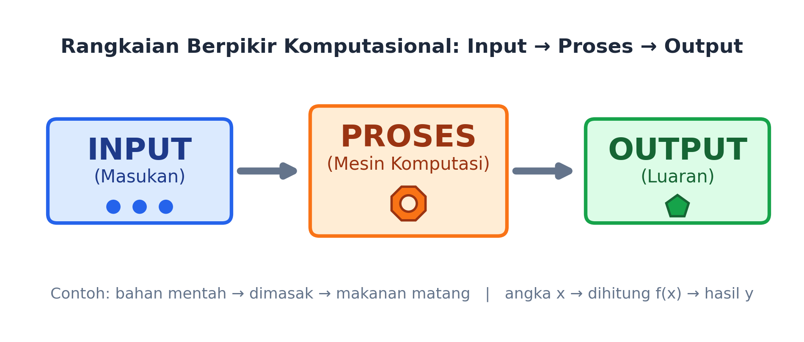
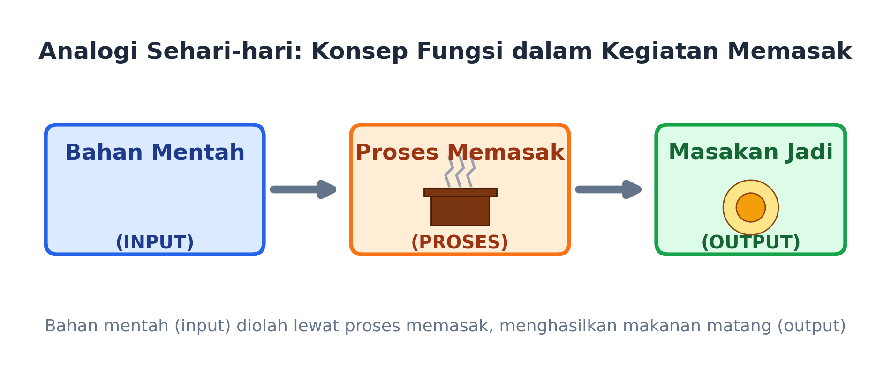
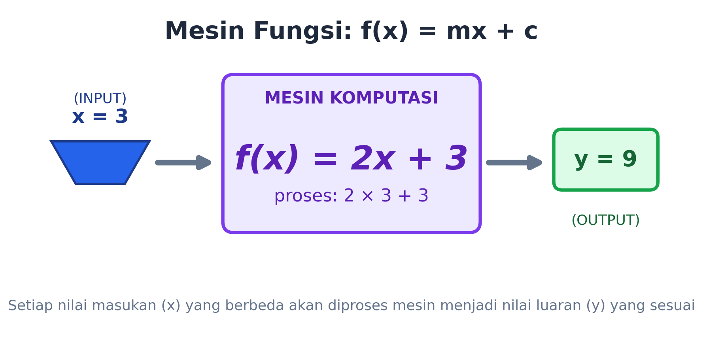
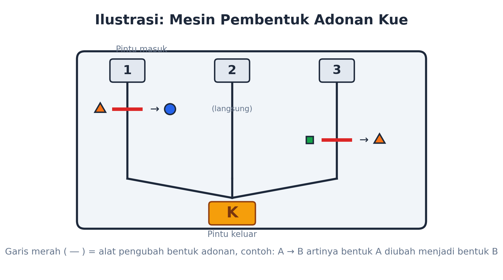
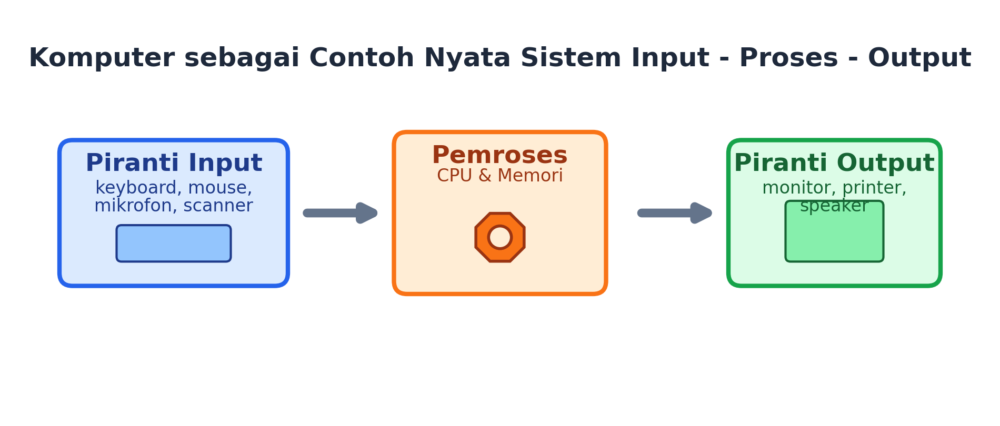

Materi belajar mandiri — mengenal fungsi sebagai mesin input, proses, dan output. Baca santai, coba tantangannya, dan buktikan sendiri kerennya berpikir komputasional!
Kelas VIII • SMP Negeri 14 TarakanPernah nggak sih kalian mikir, kok bisa ya kalkulator langsung tahu jawaban 2 × 3 + 3? Atau kok mesin ATM tahu persis berapa uang yang harus keluar setelah kalian pencet-pencet tombol? Nah, di balik semua itu ada satu konsep keren yang namanya FUNGSI. Yuk, kita bongkar rahasianya bareng-bareng!
Bayangin kalian punya mesin ajaib. Kalian masukkan sesuatu ke mesin itu (namanya INPUT), mesin itu ngapa-ngapain di dalam (namanya PROSES), terus keluar deh hasilnya (namanya OUTPUT). Itulah yang disebut FUNGSI: sebuah "mesin" yang selalu mengubah masukan menjadi keluaran dengan aturan yang sama, setiap saat.

Input → Proses → Output: rumus rahasia di balik banyak hal di sekitar kita
Contoh paling gampang: BLENDER. Kalian masukin buah (input), tekan tombol nyala (proses = diputar pisau blender), keluar deh jus buah (output). Simpel, kan?

Analogi memasak: bahan mentah → dimasak → jadi makanan enak
Di Matematika, fungsi biasanya ditulis begini: f(x) = 2x + 3. Artinya, berapa pun angka yang kalian masukkan sebagai x, mesin ini akan mengalikannya dengan 2 lalu menambah 3.
Contoh: kalau x = 3, maka f(3) = 2×3 + 3 = 9. Gampang banget kan tinggal ikutin aturannya!

Berapa pun x yang masuk, mesin fungsi akan mengolahnya dengan aturan yang sama
Coba deh perhatiin hal-hal ini, ternyata mereka pakai "logika fungsi" juga:
Kata "Reff" = perintah mengulang bagian tertentu tanpa nulis ulang liriknya.
"Persiapan masuk kelas" = baris, periksa kuku, masuk sesuai urutan — satu perintah, tiga aksi.
Bawa uang (input) → jalan ke warung (proses) → pulang bawa gula & kembalian (output).
Kadang kita nggak dikasih rumusnya langsung, tapi cuma dikasih data. Nah, gimana caranya nemuin rumus fungsinya? Yuk simak contoh serunya!
Hari ke-1, tinggi tanaman 5 cm. Hari ke-2, tinggi tanaman jadi 12 cm. Kira-kira, rumus apa yang bisa memprediksi tinggi tanaman di hari-hari berikutnya?
| Hari ke- | 1 | 2 | 3 | 4 | 5 | 6 |
|---|---|---|---|---|---|---|
| Tinggi (cm) | 5 | 12 | 19 | 26 | 33 | 40 |
Nah, sekarang giliran kalian coba sendiri bareng teman kelompok di kelas — seru banget nemuin pola tersembunyi seperti detektif angka!
Bobo lagi main ke pabrik kue. Di sana ada mesin ajaib yang bisa mengubah bentuk adonan kue! Mesin ini punya 3 pintu masuk (nomor 1, 2, dan 3), dan satu pintu keluar diberi label K.

Setiap adonan yang lewat "alat pengubah bentuk" (garis merah) bisa berubah wujud, sesuai aturan A → B
Aturannya: kalau ada tanda garis dengan keterangan A → B, artinya "kalau adonan berbentuk A melewati alat itu, bentuknya berubah jadi B". Tapi kalau bentuknya bukan A, adonan nggak berubah sama sekali!
Jika Bobo ingin mendapatkan kue berbentuk PERSEGI ketika keluar dari pintu K, bentuk adonan awal apa yang harus dimasukkan, dan lewat pintu nomor berapa?
💬 Setelah menjawab, diskusikan alasan kalian dengan kelompok dan tuliskan di LKPD ya!
Masukkan sembarang angka ke mesin fungsi f(x) = 2x + 3 di bawah ini, lalu lihat apa yang terjadi!
Karena komputer sebenarnya juga bekerja dengan logika yang sama: menerima masukan lewat keyboard/mouse (input), mengolahnya di CPU dan memori (proses), lalu menampilkan hasilnya di layar atau lewat speaker (output).

Komputer = contoh nyata dari sistem input - proses - output
Kalau kalian sudah paham logika "input-proses-output" ini, kalian sudah selangkah lebih dekat untuk memahami cara berpikir seorang programmer, lho!